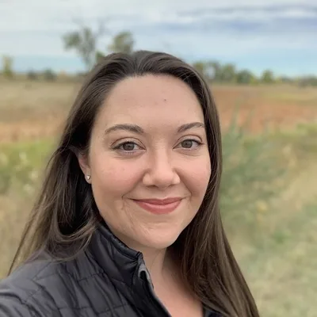
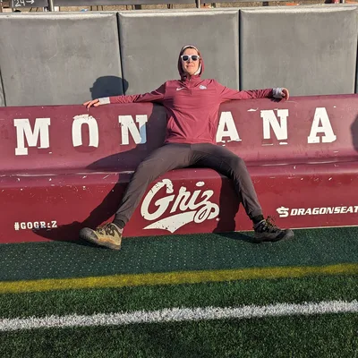
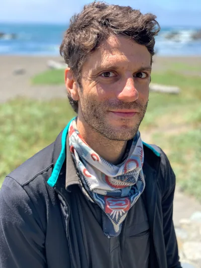
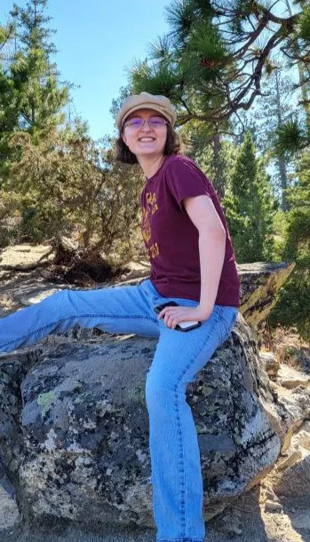
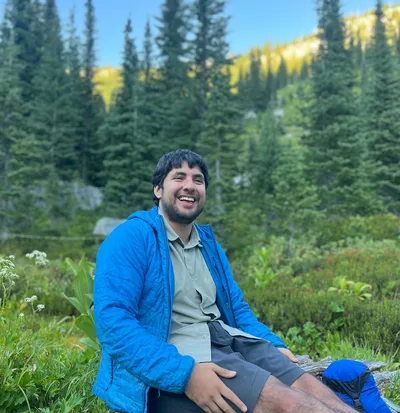
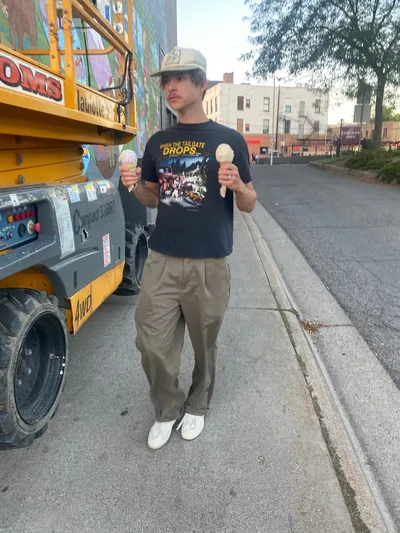
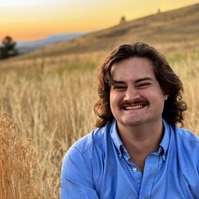
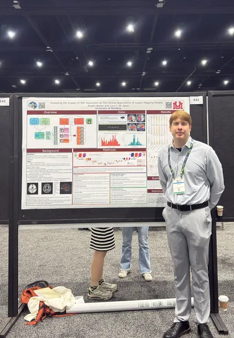

Manages brAIn_lab, teaches courses at UM, and oversees research projects.
Working with timecorr and pieman data to optimize higher order correlations.

Working with human in the loop machine learning.

Working with Gaussian models to predict air quality around surrounding purple air sensors.

Exploring cellphone mobility data in order to find patterns in movement change during times of poor air quality.

Working with supereeg.

Exploring sentiment analysis models on Reddit data in an attempt to understand public perception of wildfires and prescribed burns. Exploring cellphone mobility data to track trends in movement patterns during times of wildfire and prescribed burn smoke.

Working with archetypes. The math man.
Exploring brain activity using MRI and computational methods to better understand neural systems and improve medical technology.

Exploring extraterrestrial neuroscience.